Historia
Los inicios del minimalismo se sitúan en la década de 1960, en Estados Unidos, en un contexto cultural y social de profundos cambios. La Segunda Guerra Mundial había dejado una sociedad traumatizada y ávida de un nuevo comienzo. Los artistas jóvenes, en particular, sentían la necesidad de encontrar nuevas formas de expresión que les permitieran alejarse del pasado y construir algo nuevo. El expresionismo abstracto, que había dominado la escena artística en la década de 1950, se había convertido en un estilo repetitivo y poco innovador. El minimalismo fue una respuesta a esta necesidad.
El término "minimalismo" se comenzó a utilizar a mediados de la década de 1960, aunque los artistas minimalistas no se autodenominaban de esta manera. En su lugar, se describían a sí mismos como "objetivistas" o "reductivistas", y su objetivo era reducir la obra de arte a su esencia más simple y básica. Los artistas minimalistas se inspiraron en varias fuentes, entre ellas la filosofía zen y la estética japonesa, que valoraban la simplicidad, la pureza y la economía de medios.
A partir de la década de 1960, el minimalismo se extendió más allá de la pintura y la escultura, influyendo en otros campos como la arquitectura, el diseño y la música. En la arquitectura, el minimalismo se manifestó en la creación de edificios con formas geométricas simples y limpias, y en el uso de materiales como el vidrio, el acero y el concreto. Los arquitectos minimalistas buscaban crear espacios que fueran funcionales y que se adaptaran al entorno circundante. En el diseño, el minimalismo se asoció con productos y muebles simples y funcionales, con líneas limpias y sin adornos innecesarios. En la música, el minimalismo surgió como un nuevo movimiento a principios de la década de 1960, y se caracterizó por su uso de patrones rítmicos repetitivos y formas estructurales simples. Los compositores minimalistas como Steve Reich, Philip Glass y Terry Riley crearon obras que se alejaban de la complejidad y la densidad de la música serialista y experimental de la época.
Entre las décadas de 1970 y 1980, el minimalismo comenzó a evolucionar hacia nuevas formas y estilos, alejándose de su énfasis en la simplicidad y la reducción y abriéndose a nuevas ideas y enfoques. Entre estas nuevas corrientes se incluyen el "neo-minimalismo", el "post-minimalismo" y el "arte povera". El neo minimalismo se centró en la simplicidad formal y en la reducción de elementos al mínimo necesario, pero a menudo utilizó materiales más complejos y tecnológicos que el minimalismo original. El postminimalismo, por su parte, se centró en la liberación de la forma y la introducción de elementos conceptuales y emocionales en el arte. Finalmente, el arte povera se centró en la utilización de materiales pobres y cotidianos y en la incorporación del tiempo y del cambio en la obra de arte. Estas corrientes posteriores reflejan una expansión y revisión de la vanguardia original, y han tenido una gran influencia en el arte y en la cultura visual en general.
Desde los años 90 hasta la actualidad, el minimalismo ha continuado evolucionando y adaptándose a las nuevas tendencias y desafíos culturales. A medida que la tecnología y la globalización han transformado la vida cotidiana, el minimalismo ha adquirido nuevas dimensiones y significados. En la cultura popular, se ha asociado con el movimiento de la simplicidad voluntaria, que promueve el estilo de vida minimalista y la reducción del consumo y del impacto ambiental. En la última década, el minimalismo también ha sido promovido por los influencers y los bloggers de estilo de vida, que han popularizado el concepto de vivir con menos y enfocarse en lo esencial.